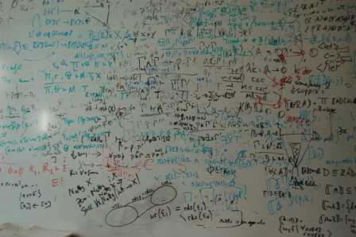

Research

I work on the semantics, design and implementation of programming languages. One goal is to develop new languages, programming models, abstractions and reasoning principles that enable programmers write correct, reliable, secure software more easily and quickly. A second is to develop compiler and implementation technologies that allow programs to execute and interoperate more efficiently. I'm a firm believer in the not entirely unreasonable effectiveness of mathematics in computing science.
My PhD thesis was on strictness analysis, a compile-time program analysis for lazy functional languages such as Haskell. One of its applications is in selectively transforming call-by-need evaluation (which gives the language nice equational properties but is not terribly efficient) into call-by-value (which is generally less costly). I developed a logical, or type theoretic, technique for strictness analysis, and investigated its denotational semantics and extension with polymorphism and algebraic datatypes.
One of the prettiest things there is in life is a three-way correspondence between an intuitionistic logic, a type theory and a class of categorical model. Between 92 and 98, working at various times with Gavin Bierman, Valeria de Paiva, Martin Hyland and Philip Wadler, I did lots of this `categorical proof theory', with particular reference to linear logic. We came up with term calculi and categorical models for various forms of intuitionistic linear logic, and developed some elegant connections with computational monads. I'm still especially proud of my strong normalization proof for the linear term calculus via the encoding of coinductive types in System F.
Like all right-thinking people, I'm a functional programmer. Back in 97, Andrew Kennedy, George Russell and I designed and implemented MLj, a compiler for Standard ML that compiles to Java bytecodes ("*wow* This is seriously great!" - James Gosling). MLj lets you program in your favourite functional programming language whilst also having smooth access to a wide range of libraries and components written in Java (though of course, object orientation is still the work of Beelzebub). You can easily write ML programs that have GUIs, play music, process XML, run in a web browser or on a web server, and all the other things that small groups of academics whose primary interest is compilers tended not to get around to making straightforward. The MLj compiler has some interesting features too, including being, as far as we know, the first implementation of parametric polymorphism by representation-based specialization (later used to implement generics in the CLR), and the use of a monadically-typed intermediate language for optimization. Andrew and I, with Claudio Russo, subsequently developed MLj further into SML.NET, which targets the .NET Common Language Runtime. We first showed SML.NET off at PDC 2000, where .NET was officially launched. SML.NET supports the full SML'97 language standard, including the module system, and even runs inside Visual Studio.
Luca Cardelli, Cedric Fournet and I designed and implemented Polyphonic C#, an extension of C# with new constructs for concurrent programming, derived from the Join Calculus. Writing correct concurrent programs is notoriously difficult, but Polyphonic C# is significantly easier to use than traditional lock-based approaches to concurrency. Furthermore, its simple model applies equally well to old-fashioned shared memory concurrency on a single machine and to message-based concurrency across a wide area network. The Polyphonic C# extensions were later included in Cω, which also adds XML and relational data manipulation features to C#.
Quite a bit of my work has involved modelling and reasoning about mutable state, in both high and low-level languages. Starting with my introduction of Relational Hoare Logic in 2004, I've looked at how to verify a range of static analyses and the transformations they enable, how to reason about program equivalences in the presence of higher-order functions and dynamically allocated references, and how to design compositional program logics for low-level languages such as assembly code. Much of this work was formalized using the Coq proof assistant, which is both an amazingly great system and a fine way to keep one's productivity down to a respectable level. I'm a proud member of the parametricity mafia.
When I joined Facebook, I soon got to put some of this research into practice by building an automated tool for showing semantic equivalence of the bytecode produced by old and new versions of the Hack compiler. My team is currently overhauling the Hack type system and inference algorithm.
Interns
I have had a whole string of great interns over the years:- Mark Shinwell 2000. Implementation of Polyphonic C#.
- Hernan Melgratti 2003. Adding pattern-matching to Polyphonic C#.
- Sam Lindley 2003/4. Speeding up rewriting in the SML.NET compiler.
- Benjamin Leperchey 2004. Denotational models of dynamically-allocated references.
- Noah Torp-Smith 2005. Specification and verification of low-level code for memory allocation.
- Uri Zarfaty 2006. Machine-checked relational type soundness for a simple compiler.
- Ivana Mijajlovic 2006. Improved specification and verification of low-level code for memory allocation.
- Vassilis Koutavas 2007. Mechanizing bisimulation for the nu-calculus.
- Nicolas Tabareau 2007. Mechanizing an interpretation of functional types as relations on compiled code.
- Neel Krishnaswami 2008. Relating denotational models to compiled code.
- Chung-Kil Hur 2008/9. Biorthogonality, step-indexing and compiler correctness.
- Georg Neis 2010. Compositionality in program verification.
- Guilhem Jaber 2011. Formalized reasoning about x86 code.
- Jonas Braband Jensen 2012. Separation logic for machine code.
- Pierre-Evariste Dagand 2013. Verified x86 compilation of regular languages.
- Olle Fredriksson 2014. Higher-level abstractions for verified machine code.
- Ryan Kavanagh 2015. Algorithms for caching build systems.
- Matthis Vakar 2016. Implementing a caching build system.
- Fangyi Zhou 2017. Extensions to the Hack language.
Postdocs
And I've had the privilege of working with some amazing postdocs:- Aleks Nanevski 2007-2009.
- Neel Krishnaswami 2009-2011.
- Geoffrey Mainland 2011-2013.
- Chung-Kil Hur 2012-2013.
PhD Students
I supervised Ken Friis Larsen for some of his PhD and acted as second/third supervisor to Peter Buchlovsky and Matt Ridsdale.Miscellaneous
I've been associated with the EU ESPRIT BRAs CLICS, CLICS-II and LOMAPS, the TMR LINEAR and the WGs APPSEM and APPSEM-II. I'm currently on the management committee of the EU COST Action EUTYPES and the industrial advisory board for the NSF DeepSpec Expedition.
My Erdös number is 4: Benton-Hyland-Pitts-Makkai-Erdös, or Benton-Cardelli-Smith-Magidor-Erdös, or Benton-Cardelli-Scedrov-Blass-Erdös, or... Offers of collaboration from those whose numbers are 1 or 2 are, of course, particularly welcome.
I'm a member of the EPSRC Peer Review College, the ACM, CiE and EAPLS. I am currently a member of Industrial Panels at the University of Kent and the University of Birmingham, and have also been on one at QMW.
I supervised many Queens' College undergraduates and have lectured at several summer schools and the University of Cambridge. I have been Director of Studies in Computer Science at Pembroke College and at Robinson College.
He may be mad, but there's method in his madness. There nearly always is method in madness. It's what drives men mad, being methodical. - GK Chesterton.